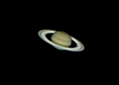

Javascript must be enabled for this page to function properly.
cjb's Astro Images
(image processing software
details
)
Deepsky (Messier) Objects
Deepsky (other) Objects
Moon

Planets
Comets
Eclipses (Solar)
Eclipses (Lunar)
Constellations
Other Astro Stuff
Up
Generated by
jAlbum 12.7.2
,
Matrix 29
 Objects/thumbs/M31 The Andromeda Galaxy.jpg "Deepsky (Messier) Objects - (Camera and lens details)")
 Objects/thumbs/NGC 2024 The Flame and B66 The Horsehead Nebulae.jpg "Deepsky (other) Objects")


/20090722 Total China/thumbs/20090722 Total Solar Eclipse 3.jpg "Eclipses (Solar) - (Observing details of the two total solar eclipses)")
/Other Lunar Eclipses/thumbs/20070303 Total Lunar Eclipse.jpg "Eclipses (Lunar)")